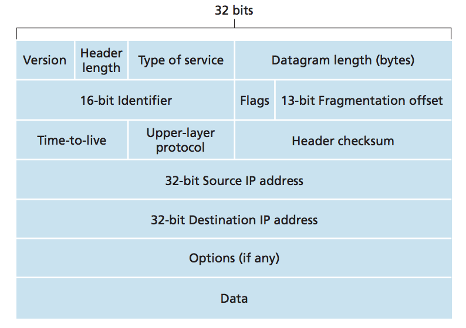

A network-layer packet is called a datagram.

Components of the IPv4 datagram
- Version number: 4 bits specify protocol version
- Header Length: 4 bits determine where data exists in datagram
- Type of Service(TOS): included in header, defines different types of datagrams to be distinquished
- Datagram Length: total length including header of datagram, datagrams are rarely larger than
1,500 bytes
- Time to live: used to prevent infinite loops, has max number that decrements to 0, then dropped
- Protocol: used at final destination, defines specific transport layer protocol to pass the datagram
- Header Checksum: aids router to check for bit errors, treats 2 bytes in header as number and sum using 1's compliment
- Otpions: allows extension of header,
- Data: transport-layer segment (TCP or UDP)